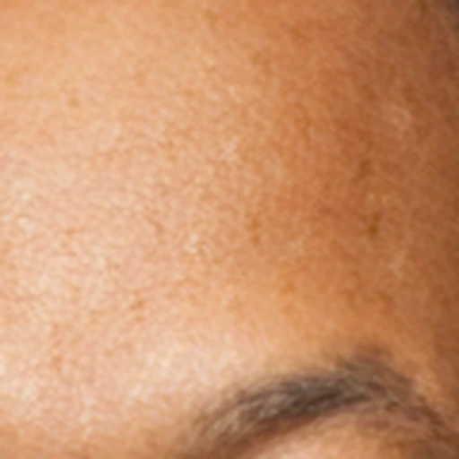
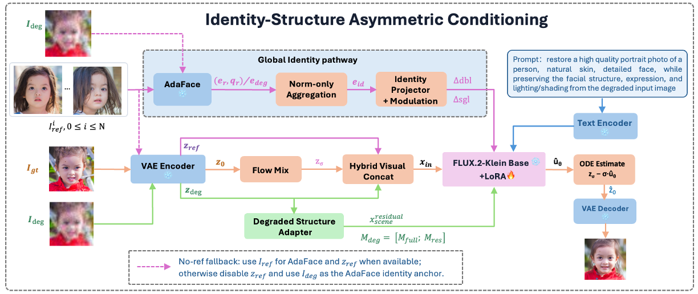
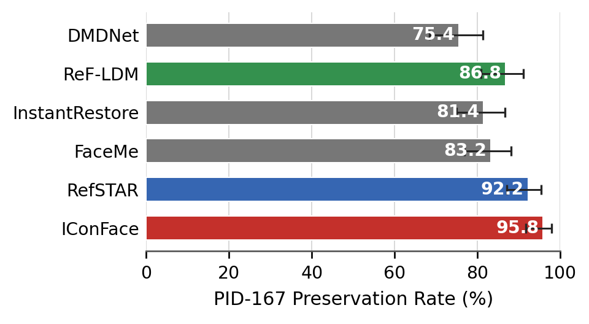
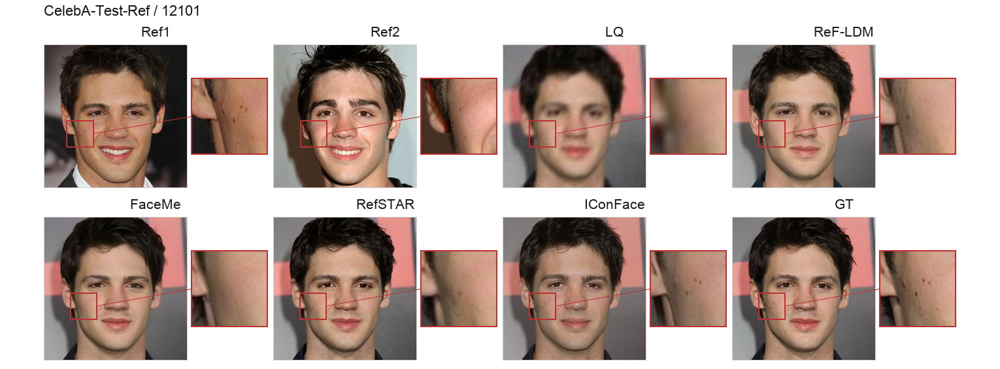
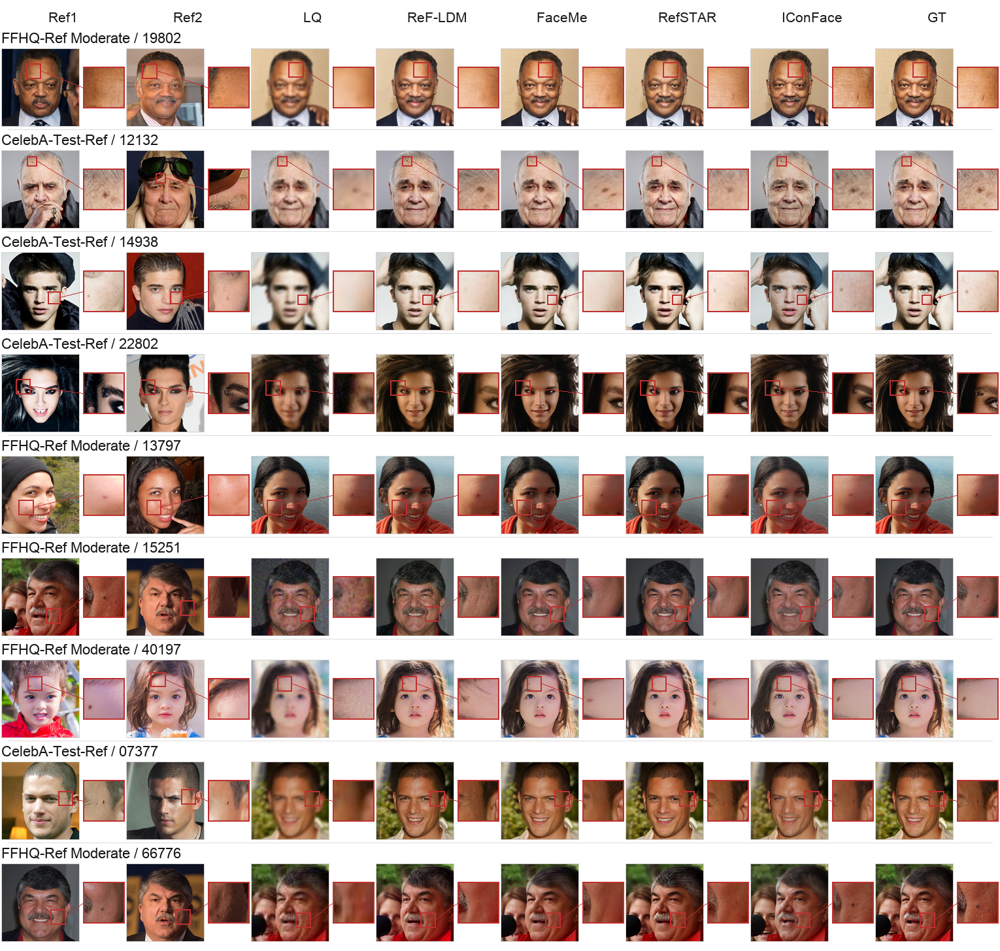

CodeFormer

Severe face degradation can remove person-specific evidence, making restoration underdetermined. A generative prior may recover a sharp, plausible face yet miss localized traits that persist across images of the same person. Same-identity references supply this missing evidence, while the degraded observation anchors target structure. We propose IConFace, a fine-grained identity-conditioned framework that optionally conditions restoration on up to three same-identity references. Its hybrid concat backbone retains degraded and reference observations as dense visual tokens, preserving localized reference evidence. An identity pathway provides compact multi-reference guidance, while a degraded-structure pathway injects full-field and local-residual memories to reinforce target-aligned structure. We also introduce a human-audited benchmark that measures whether persistent localized identity details survive restoration. IConFace achieves leading reference compatibility, especially under severe degradation, and the highest observed preservation rate on this benchmark. Without references, it achieves leading learned perceptual quality across five blind-restoration benchmarks. Joint reference-based and paired-target evaluations show that reference-supported identity recovery and exact target agreement are complementary.
Spatially distributed reference tokens preserve localized evidence, complemented by norm-weighted global identity aggregation.
An input residual and full-field/local-residual memories repeatedly anchor restoration to the degraded target observation.
A human-audited benchmark evaluates whether persistent localized identity traits survive restoration.
Best RefAvg identity compatibility under both independent ArcFace and MagFace evaluation.
A 95.8% human-audited preservation rate, the highest observed result on PID-167.
Leading learned perceptual quality across all five evaluated datasets when references are unavailable.
IConFace keeps reference evidence spatially accessible while reinforcing target-aligned structure from the degraded observation.

References remain spatially distributed visual tokens throughout restoration.
Norm-weighted aggregation provides compact multi-reference conditioning.
Same-grid residual and memory paths reinforce target-aligned structure at multiple spatial scales.
Headline identity evaluation averages output-to-reference similarities within each sample (RefAvg). ArcFace and MagFace are independent of the AdaFace encoder used during training.
PID-167 asks whether a localized identity trait supported by the paired GT and a same-identity reference remains visible after restoration.



Across diverse ages, poses, occlusions, illumination, and degradation conditions, IConFace recovers clear eyes and coherent facial components while preserving visible occlusion boundaries and surrounding structure.
Two main-paper examples illustrate how identity guidance and degraded-structure reinforcement complement the dense concat backbone. The full two-route configuration yields the strongest displayed Ref₁ similarity in both cases.
@article{niu2026iconface,
title={IConFace: Fine-Grained Identity Conditioning for Reference-Aware Face Restoration},
author={Niu, Axi and Zhang, Jinyang and Qing, Senyan},
journal={arXiv preprint arXiv:2605.02814},
year={2026},
eprint={2605.02814},
archivePrefix={arXiv},
primaryClass={cs.CV},
doi={10.48550/arXiv.2605.02814},
url={https://arxiv.org/abs/2605.02814}
}